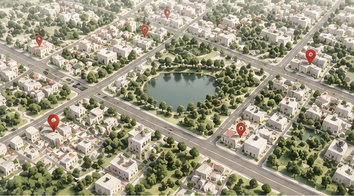
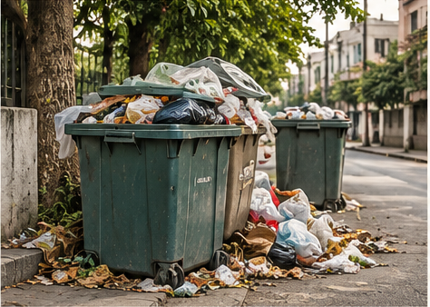
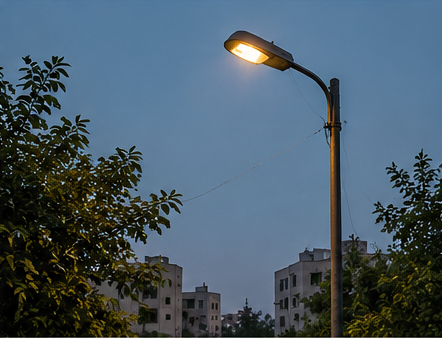

Roads
Living style guide
The CivicFix design system.
A clean civic-service portal: a warm off-white page, white panels with fine borders, brick-maroon actions and sage-green reassurance, with a classic serif for headings. The static pages and the React app share this exact stylesheet.

Palette
Maroon for every action, sage for reassurance and success, white panels on a warm off-white page, and one fixed colour per status. Every colour is a CSS variable with a dark-mode value.
Brand
Light theme
Reported
Acknowledged
In Progress
Resolved
Merged
Dark theme
Reported
Acknowledged
In Progress
Resolved
Merged
Typography
Libre Caslon Text for headings, Inter for everything you read and click.
Display · Caslon 400 · 40–68 px
A Cleaner, Safer Tomorrow
H1 · Caslon 400 · 32–44 px
Report an Issue
H2 · Caslon 400 · 28–38 px
Recent Issues in Your City
H3 · Caslon 400 · 22–26 px
Complaint Submitted Successfully
Card title · Inter 600 · 16 px
Large pothole near bus stop
Lead · Inter 400 · 16–18 px
Report civic issues in your locality, track their progress, and help build better communities.
Label · Inter 600 · uppercase
Complaint reference ID
Buttons and links
Buttons lift slightly on hover, press down on click, and a soft ripple spreads from the pointer.
Variants
Chips and issue cards
Category chips sit above the title, status chips at the bottom. Cards lift on hover and their photo zooms gently.
Roads
Waste
Streetlight
Drainage
Other
Escalated
Reopened

Waste
Overflowing garbage bin
Reported
Streetlight
Streetlight not working
AcknowledgedForms
The step indicator and category cards from the report flow, plus fields with focus glow and inline validation (plain JavaScript). Try submitting the form empty.
- 1Category
- 2Details
- 3Location
- 4Review
What type of issue are you reporting?
Feedback
Toasts (jQuery) confirm actions, skeletons hold the space while data loads, and empty states stay friendly.
Toasts
Skeleton loader

No issues here yet
Nobody has reported a problem in this locality.
Motion
Calm and purposeful: content fades up as it appears, numbers count up, the headline types itself. Turn on "reduce motion" in your OS and all of it becomes still.
Typewriter (hero headline)
A Cleaner, Safer Brighter Tomorrow Starts With You.
Counters (jQuery) and CSS charts
0
Issues Reported
0
Resolved
0
Active Localities
0
Avg. Resolution
FAQ accordion (jQuery slideToggle)
No. You can report anonymously. Name and phone are optional and only shown to officials.
We show you similar issues nearby first. Add your support to the existing report and it climbs the priority list.
Every report gets an ID like CF-2026-00123. Enter it on the Track Complaint page to see each status update.